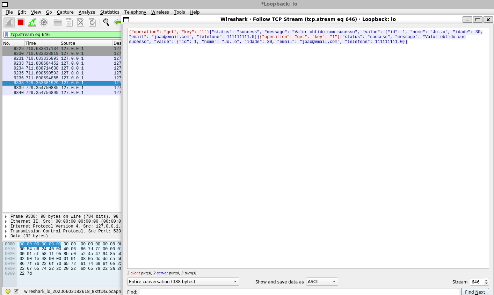

O Transport Layer Security (TLS) é um protocolo criptográfico que fornece segurança na comunicação de dados pela Internet. Ele é projetado para garantir a confidencialidade, integridade e autenticidade das informações transmitidas entre um cliente e um servidor.
Para desenvolver um sistema cliente servidor com TLS, foi utilizado a linguagem de programação Python, temos dois arquivos separados,
um para o cliente e outro para o servidor. No servidor começamos abrindo e atribuindo um socket para lidar com as conexões que serão
feitas por clientes. Definimos um IP e uma porta para o servidor, A partir daí, o socket fica escutando por conexões na porta e IP definidos
def start(self):
# cria um socket TCP/IP
self.socket = socket.socket(socket.AF_INET, socket.SOCK_STREAM)
self.socket.bind((SERVER_HOST, SERVER_PORT))
# aguarda conexão de clientes
self.socket.listen(1)
print(f'Servidor aguardando conexões em {SERVER_HOST}:{SERVER_PORT}...')
while True:
client_socket, client_address = self.socket.accept()
print(f'Conexão estabelecida com {client_address}')
quando um cliente se conectar, o servidor irá aceitar a conexão utilizando a biblioteca ssl para criar um contexto SSL, que é responsável
por configurar toda a conexão SSL, neste contexto definimos os certificados tanto do servidor como dos clientes que terão sua conexão aceita,
já que decidimos fazer a validação pelo servidor, apenas os clientes que tiveram seu certificado adicionado neste contexto poderão se conectar
com o servidor. Então, com o contexto criado, utilizamos ele para fazer o wrap no socket, dessa forma ele irá tratar as conexões utilizando o
protocolo TLS com as configurações que definimos no contexto.
try:
context = ssl.create_default_context(ssl.Purpose.CLIENT_AUTH)
context.verify_mode = ssl.CERT_REQUIRED
context.load_cert_chain(certfile=SERVER_CERTFILE, keyfile=SERVER_KEYFILE)
context.load_verify_locations(cafile=CLIENT_CERTFILE)
# estabelece uma conexão SSL/TLS
secure_socket = context.wrap_socket(client_socket, server_side=True)
self.handle_client(secure_socket)
# encerra conexão com o cliente
print("Encerrando conexão com o cliente...")
secure_socket.shutdown(socket.SHUT_RDWR)
secure_socket.close()
except Exception as e:
print(e)
A função handle_client recebe os dados enviados pelo cliente utilizando a função recv padrão dos sockets, e conforme o comando recebido,
ele irá chamar a função correspondente para executar a ação solicitada pelo cliente, e enviar a resposta para o cliente utilizando a função
send padrão dos sockets.
def handle_client(self, connection):
while True:
# recebe a solicitação do cliente
request = connection.recv(4096)
initTime = time.time()
if not request:
print("Conexão encerrada pelo cliente")
return
request_data = json.loads(request.decode('utf-8'))
operation = request_data.get('operation')
# realiza a operação de criação no servidor
if operation == 'create':
print("Requisição de criação recebida")
value = request_data.get('value')
response = self.create_value(value)
# realiza a operação de consulta no servidor
elif operation == 'get':
key = request_data.get('key')
response = self.get_value(key)
# realiza a operação de update no servidor
elif operation == 'update':
key = request_data.get('key')
value = request_data.get('value')
response = self.update_value(key, value)
# realiza a operação de delete no servidor
elif operation == 'delete':
key = request_data.get('key')
response = self.delete_key(key)
else:
response = {'status': 'error', 'message': 'Operação inválida'}
# Enviar a resposta para o cliente
connection.send(json.dumps(response, ensure_ascii=False).encode(encoding='utf-8'))
As outras funções não são tão importantes para o entendimento da implementação cliente/servidor TLS, mas poderão ser analisadas
no código fonte do projeto disponível no final da página.
No cliente, começamos abrindo e atribuindo um socket para lidar com as conexões que serão feitas com o servidor, utilizamos a biblioteca
ssl para criar um contexto SSL, semelhante ao do servidor, para configurar toda a conexão SSL, neste contexto carregamos os certificados
do servidor e do cliente e utilizamos este contexto para fazer o wrap no socket, dessa forma ele irá tratar as comunicações utilizando
o protocolo TLS com as configurações que definimos no contexto.
def connect(self):
# cria um socket TCP/IP
self.socket = socket.socket(socket.AF_INET, socket.SOCK_STREAM)
self.socket.setsockopt(socket.SOL_SOCKET, socket.SO_REUSEADDR, 1)
try:
context = ssl.create_default_context(ssl.Purpose.SERVER_AUTH, cafile=SERVER_CERTFILE)
context.load_cert_chain(certfile=CLIENT_CERTFILE, keyfile=CLIENT_KEYFILE)
A partir daí, solicitamos a conexão com o servidor no IP e na porta definida,
caso a conexão seja estabelecida, temos uma comunicação segura entre o cliente e o servidor, e podemos utilizar as funções de create, get,
update e delete para manipular os dados do servidor, utilizando a interface implementada.
# estabelece uma conexão SSL/TLS segura
secure_socket = context.wrap_socket(self.socket, server_hostname=SERVER_HOST)
secure_socket.connect((SERVER_HOST, SERVER_PORT))
return secure_socket
except ssl.SSLError as e:
print(f"Erro de SSL ao conectar ao servidor: {e}")
return None
A função menu_interface é chamada em loop, fazendo requisições para o servidor, como o usuário requisitar, por exemplo:
ao solicitar a criação de um novo valor, a função request_create é chamada enviando uma requisição utilizando o send padrão
dos sockets.
def menu_interface(self):
print("1. Create")
print("2. Get")
print("3. Update")
print("4. Delete")
print("5. Exit")
try:
choice = input("Insira a opção: ")
choice = int(choice)
except ValueError:
choice = 0
return choice
def request_create(self, secure_socket, client):
print("Insira o valor no formato json: ")
value = input()
request = {'operation': 'create', 'value': value}
client.send_request(request, secure_socket)
def send_request(self, request, secure_socket):
if secure_socket:
# envia requisição
secure_socket.send(json.dumps(request).encode(encoding='utf-8'))
# recebe resposta
response = secure_socket.recv(4096)
print(f'Resposta do servidor: {response.decode(encoding="utf-8")}')
Utilizando o contexto SSL para envolver o socket, permite que o servidor e o cliente utilizem as funções padrão dos sockets (send, recv, etc) para se comunicarem, e a biblioteca ssl irá tratar toda a comunicação utilizando o protocolo TLS, garantindo a segurança da comunicação.
Utilizando o wireshark para fazer o sniff da comunicação entre o cliente e o servidor é possível observar que a criptografia realmente funciona. Mensagem criptografada utilizando TLS: Mensagem não criptografada: 